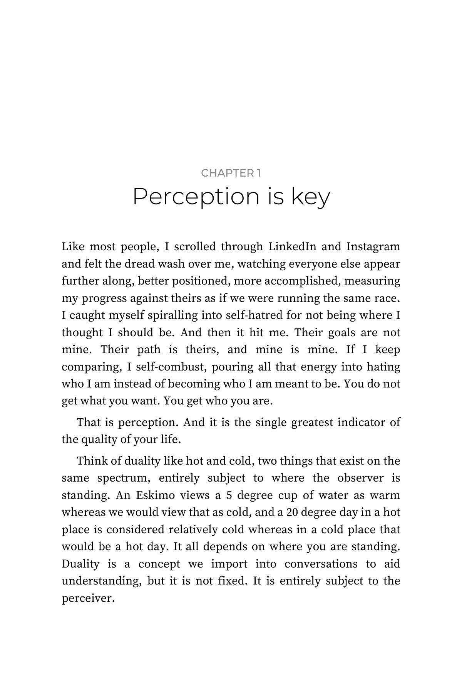
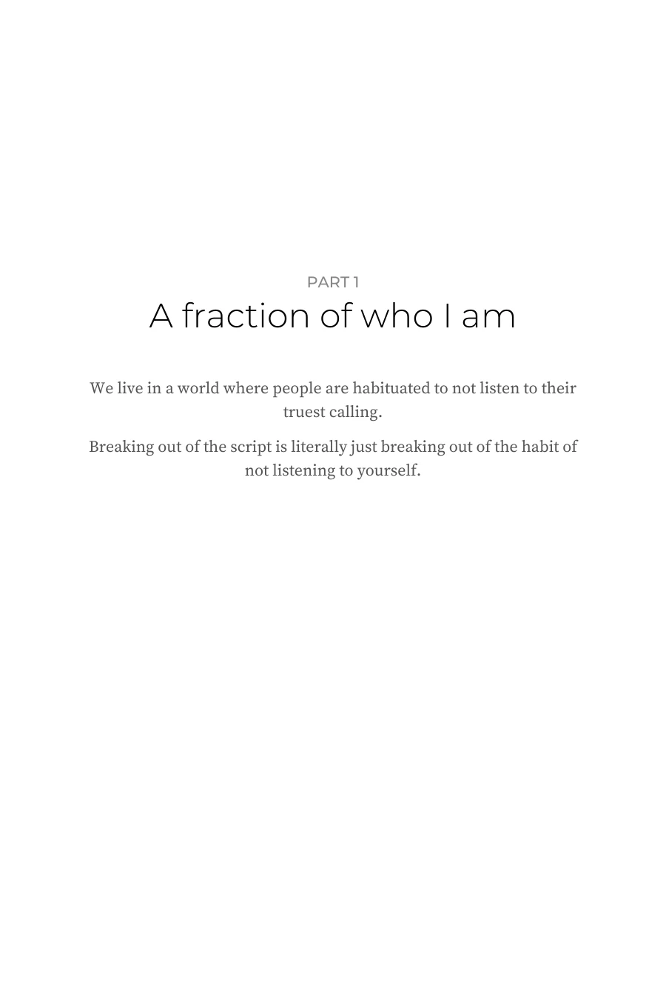

The book
Your soul knows best.
Listen to your soul. All it has wanted is to be heard.
The book is being finished.
Look inside

There is a particular kind of tiredness that comes from living a life that is not yours.
Take a closer look.

On the back
There is a particular kind of tiredness that comes from living a life that is not yours.
It is not the tiredness of the body. It is the tiredness of waiting. Waiting for the right moment, the right reception, the right sign that one is finally allowed to be who one already is.
Contentment was never about the absence of difficulty.
All I had to do was sit still enough to hear it.
34 essays and 85 shorter pieces. Open it anywhere.
soulsensis
Inside
Open it anywhere.
Every piece stands on its own page.


Pages 14 and 15, as printed. Paperback, 6 × 9 inches.
Authenticity.
Relatability.
Connection.
Feel at home again.
You are not alone in this life.
What readers have said.
“It is so beautifully written, and hits deep to the core. Exactly what I needed to hear.”
“Your words really… gave me a great sense of relief. Very soothing.”
“This actually got to me this morning… thank you.”
“Very wholesome post to wake up to at the top of my feed. Thank you sir, well written and very encouraging.”
“This resonated with me as i have experienced this several times and I now welcome moments like this in my life and indeed somewhat chase them now.”
“…I’m glad there are people like you in this world to encourage me to look ahead and keep moving forward.”
Written from inside it.
Open it anywhere.
Every piece stands on its own page.
Written by a human.
Every line is the author's own, most of it written by hand in a journal first.
No name. No face.
The author stays soulsensis so nothing has to be left out.
Formats
Choose how you want to read it.
Paperback
A$24.99US$14.99
6 × 9 inches, matte cover, printed by Amazon and posted to you. The one to leave on the bedside table and lend.
Kindle
A$9.99US$6.99
The whole book on your phone, Kindle or tablet. Buy it on your own country's Amazon; the price is set in your currency.
Prices in Australian dollars unless marked. Amazon sets local prices in other countries.
Before you buy.
Was this written by a human?
Yes. Every line is the author's own, most of it written by hand in a journal first.
Why is the author anonymous?
So the writing can stay honest. The essays describe real mornings, real jobs and real shame, and a name would mean softening them. The author stays soulsensis so nothing has to be left out.
How long is the book?
It is being finished as one larger book, with the author's journals added, so the length and the contents may change. Written to be read slowly and returned to.
Is it a self-help book?
No steps, no hacks, no morning routine. It is one person thinking honestly from inside their own life. It is not medical or psychological advice; if you are struggling, please talk to a doctor, a counsellor or a crisis line.
Can I read some of it first?
Yes. Two pages are above, as printed, and the essays the book grew from are free on this site and read aloud on YouTube over the author's own piano.
Is the book on sale yet?
Not yet. The book is being finished as one larger book, with the author's journals added. It goes on sale when it is done.